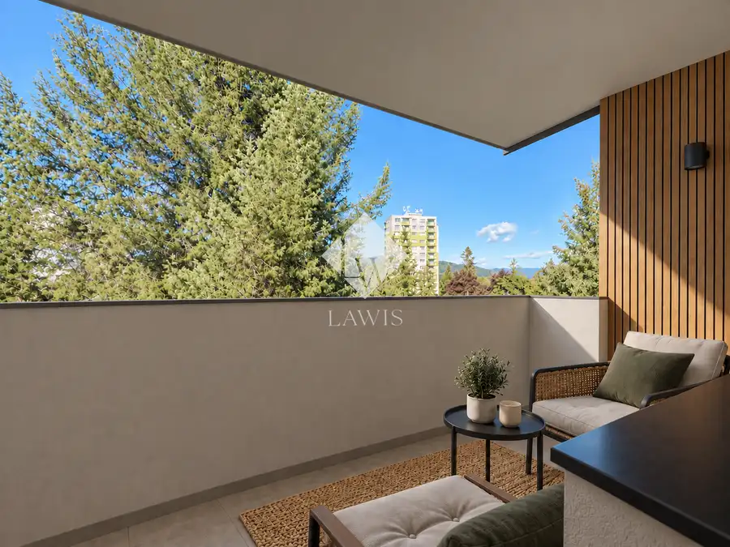
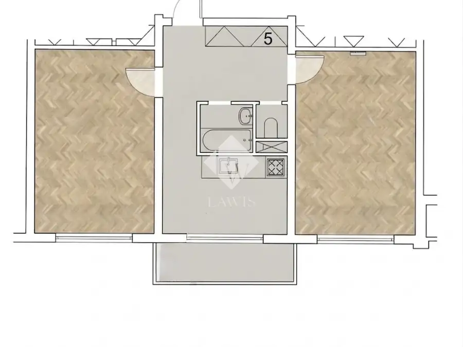
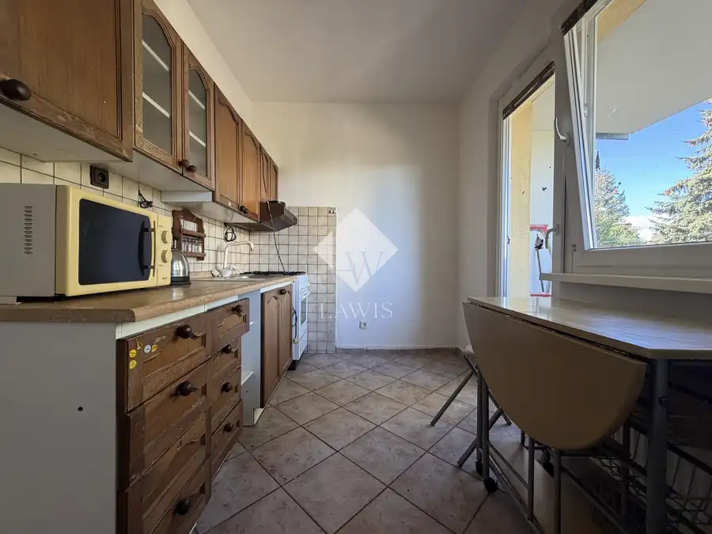
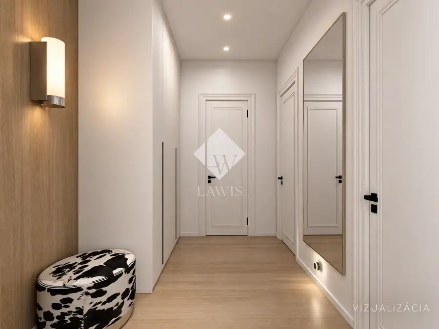
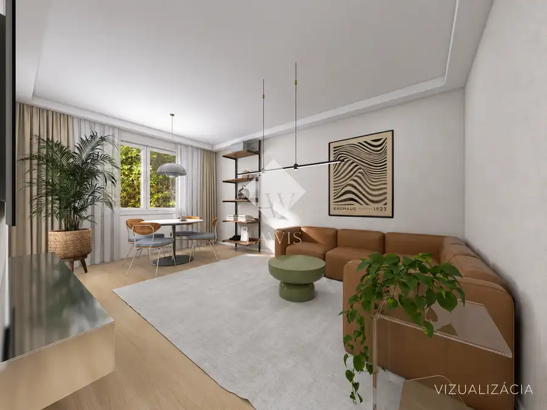
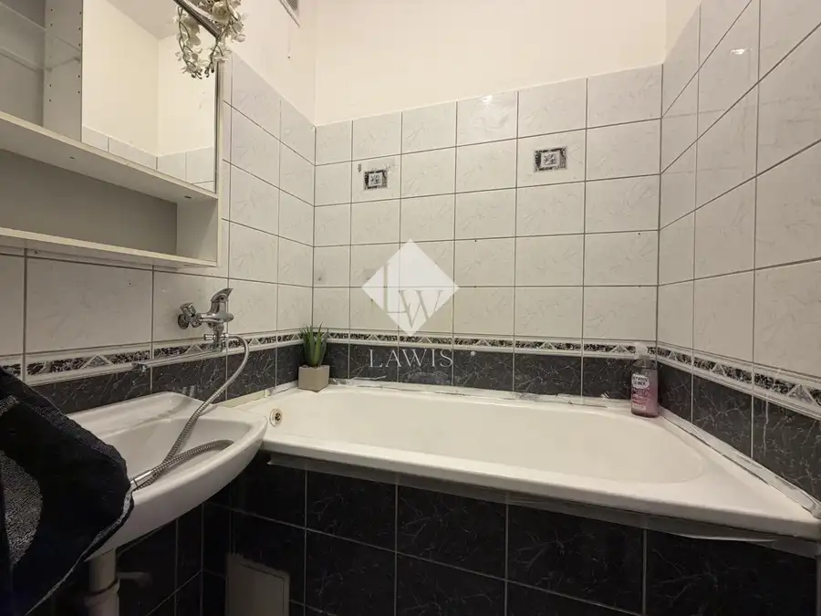

Svetlý 2-izbový byt s loggiou
Žilina






- Dispozícia2-izbový
- Plocha57 m²
- Poschodie4.
- StavČiastočná rekonštrukcia
- VlastníctvoOsobné
O nehnuteľnosti
LAWIS Realitná kancelária ponúka na predaj svetlý 2-izbový byt s loggiou na Hlinskej ulici.Byt s výmerou 57 m² ponúka dve samostatné izby, kuchyňu s loggiou, priestrannú chodbu, wc, kúpeľňu a pivnicu. Byt prešiel staršou rekonštrukciou a jeho súčasný stav ponúka možnosť ďalšej modernizácie. Pre lepšiu predstavu o možnostiach priestoru sú súčasťou prezentácie aj vizualizácie možného zariadenia.DISPOZÍCIAByt pozostáva z priestrannej vstupnej chodby, kuchyne s loggiou, obývacej izby, samostatnej spálne, kúpeľne a WC. K bytu prislúcha pivnica v suteréne bytového domu.LOKALITAHliny VII patria medzi obľúbené časti Žiliny s kompletnou občianskou vybavenosťou. V pešej dostupnosti sa nachádzajú obchody, školy, škôlky, služby, zastávky MHD aj možnosti športového a voľnočasového vyžitia. Výhodou je tiež dobrá dostupnosť do centra mesta.ZÁKLADNÉ INFORMÁCIE• výmera 57 m²• loggia• 2 samostatné izby• 4. poschodie• zateplený bytový dom• bez výťahu• staršia rekonštrukcia• pivnicaByt je vhodný pre záujemcu, ktorý hľadá bývanie v dobrej lokalite a zároveň si chce interiér postupne upraviť podľa vlastných predstáv.ID: 1236Cena: 163 900 EurV prípade záujmu o obhliadku alebo bližšie informácie nás neváhajte kontaktovať na tel. č. 0905920087 alebo mailom na bellanova@lawis.sk.---Energetický certifikát k stavbe nebol dodaný. ---Realitná kancelária LAWIS je členom Realitnej únie Slovenskej republiky a riadi sa jej Realitným kódexom.
Parametre
- Cena vrátane energií
- Nie
- Druh
- 2 izbový byt
- Dátum zverejnenia
- 07. 09. 2026
- Orientácia
- Juhozápadná
- Podlažie
- 4
- Počet izieb / miestností
- 2
- Počet lodžií
- 1
- Počet pivníc
- 1
- Stav nehnuteľnosti
- Čiastočná rekonštrukcia
- Typ
- Predaj
- Umiestnenie
- Ďalšie nadzemné podlažie
- Vlastníctvo
- Osobné
- Vybavenie
- Lodžia, Terasa, Pivnica
- Vykurovanie
- Ústredné
- Úžitková plocha
- 57 m²